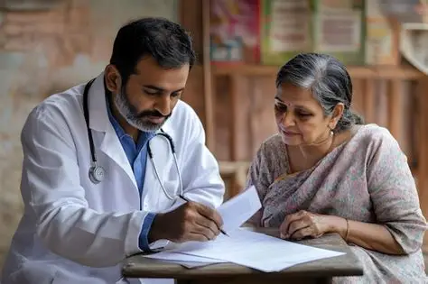

Healthcare Services Offered at Our Medical Camps
Our medical camps provide essential healthcare services, preventive health screenings, medical consultations, and awareness programmes to improve community health and well-being.

General Health Checkups
Comprehensive health examinations help identify common health issues early and encourage timely medical care.

Health Screening
Free screening for blood pressure, diabetes, BMI, and other basic health parameters to promote preventive healthcare.

Doctor Consultations
Qualified doctors provide personalized consultations, diagnosis, treatment advice, and referrals whenever required.
Health Education
Interactive awareness sessions on nutrition, hygiene, disease prevention, and healthy lifestyle practices for all age groups.